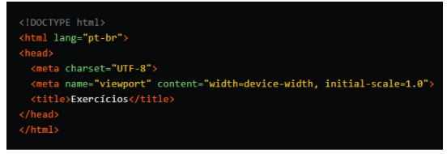

Tudo sobre HTML5
A relação entre HTML, CSS e JavaScript
- Agora que você sabe o que é HTML, vamos entender a relação entre JavaScript, HTML e CSS (Cascading Style Sheets). Apesar de o HTML ser uma linguagem que possui diversas funções, ela não consegue criar estruturas dinâmicas de conteúdo.
Por isso, em geral, os websites das empresas costumam incluir duas outras linguagens: CSS e JavaScript. Enquanto o primeiro fica responsável por incluir cor, layout e animações, o JavaScript permite a inclusão de galerias de fotos e pop-ups, por exemplo.
Saiba o que é back-end
Entendeu o que é HTML? Neste artigo, você pôde conhecer a função deste código, além de compreender as principais tags que fazem a página de um website, assim como a história do HTML.
Como você viu, este é um recurso que ajuda na formatação de um website, mas, para que o portal seja eficaz, existem outros recursos, como o back-end. Para descobrir o que é esse programador, conheça o artigo “O que é back-end e qual seu papel na programação?” no blog da TOTVS.
Funções
- Sigla para HyperText Markup Language — Linguagem de Marcação de Hipertexto —, o HTML é o componente base da web. Isso quer dizer que ele permite a construção de websites e a inserção de novos conteúdos, como imagens e vídeos, por meio dos hipertextos.
- Imagine que você precisa construir um site do zero com informações da sua empresa. Nesse caso, você precisará conhecer a estrutura do HTML, criando um documento no bloco de notas e acrescentando códigos — tags —, que indicarão parágrafos, quebra de texto, espaçamento, imagens, entre outros.
Em geral, em um único site, existem diversos documentos HTML, criando páginas como homepage, página de produto e informações sobre a empresa. Em cada aba, existe um código diferente.
Imagem Código base HTML5

Voltar